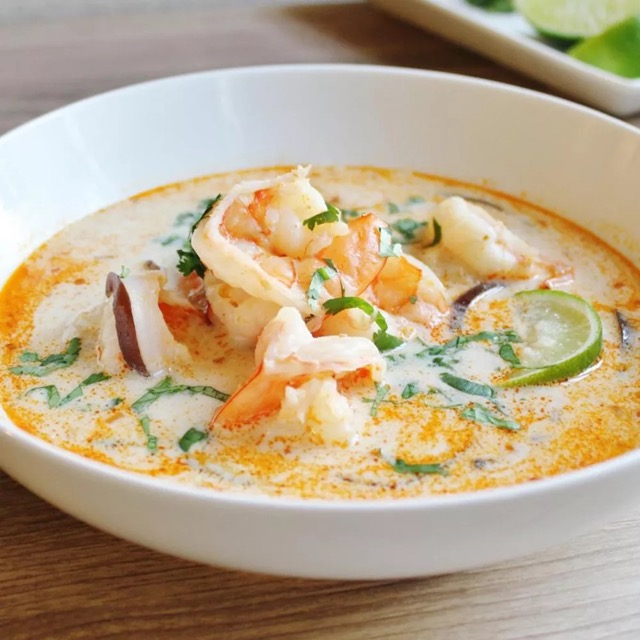

Thai Coconut Soup
Description
This Thai coconut soup is full of authentic,
bold, and delicious Thai flavors. This is the
best Thai soup recipe out there — you won't
be disappointed with this one! Serve over
steamed rice.
Ingredients
- 1 tablespoon vegetable oil
- 2 tablespoons grated fresh ginger
- 2 teaspoons red curry paste
- 1 stalk lemon grass, minced
- 4 cups chicken broth
- 3 tablespoons fish sauce
- 1 tablespoon light broan sugar
- 3 (13.5 ounces) cans cocnonut milk
- 1/2 pound fresh shiitake mushrooms, sliced
- 1 pound medium shrimp - peeled and deveined
- 2 tablespoons fresh lime juice
- salt to taste
- 1/4 cup chopped fresh cilantro
Directions
- Heat oil in a large pot over medium heat.
Add ginger, curry paste, and lemongrass;
cook and stir in the hot oil for 1 minute.
- Add coconut milk and mushrooms; cook and
stir until mushrooms are soft, about 5
minutes.
- Add shrimp; cook until no longer translucent,
about 5 minutes. Stir in lime juice; season
with salt and garnish with cilantro.
Back to Top
Back to Main Menu